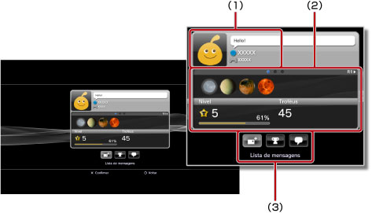
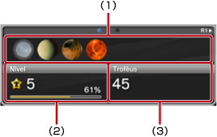
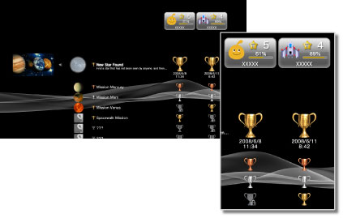

Amigos > Lista de amigos > Visualizando perfis
Visualizando perfis
Para utilizar este recurso, pode ser necessário atualizar o software de sistema.
Você pode ver seu perfil ou o perfil de um Amigo. Para ver o perfil de um Amigo, selecione seu avatar.

(1) |
Exibir status |
|---|---|
(2) |
Informações |
(3) |
Painel de controle |
Dica
Para obter mais informações sobre a exibição do status, veja  (Amigos) > [Lista de amigos] > [Verificando o status] neste guia.
(Amigos) > [Lista de amigos] > [Verificando o status] neste guia.
Visualizando informações em uma tela do perfil
Em um perfil, você pode ver informações, tais como o progresso de troféus, o número de troféus conquistados para cada grau e informações detalhadas sobre seus Amigos. Você pode percorrer as informações pressionando o botão L1 ou R1.

(1) |
Troféus conquistados recentemente |
|---|---|
(2) |
Nível atual e progresso para o próximo nível |
(3) |
Número total de troféus conquistados |
Utilizando o painel de controle em [Perfil]
Ao ver um perfil, você pode realizar várias operações utilizando o painel de controle. Os ícones exibidos no painel de controle variam dependendo do status do Amigo.
 |
Menu (título do jogo) | Exibe uma lista das ações que podem ser realizadas no jogo que está sendo jogado. |
|---|---|---|
 |
Adicionar um amigo | Envia uma solicitação para adicionar alguém à sua lista de Amigos. |
 |
Lista de mensagens | Exibe uma lista de mensagens trocadas com o Amigo. |
 |
Criar mensagem | Cria uma nova mensagem. |
 |
Comparar troféus | Compara seu progresso de troféus com o status de um Amigo. |
 |
Iniciar novo bate-papo | Inicia um bate-papo. |
 |
Responder ao pedido de amigo | Abre a mensagem solicitando para adicioná-lo como um Amigo e envia uma resposta. |
 |
Adicionar à lista de bloqueados | Adiciona um Amigo à sua lista de bloqueados. |
 |
Excluir da lista de bloqueados | Exclui um Amigo da sua lista de bloqueados. |
Dicas
- O painel de controle não pode ser ocultado.
- O painel de controle não será exibido quando você estiver visualizando seu próprio perfil.
Alterando a cor de fundo da sua tela de perfil
Selecione a guia esquerda superior na tela de perfil e, depois, pressione o botão  para exibir a paleta de cores. Selecione a cor de fundo da sua tela de perfil na paleta.
para exibir a paleta de cores. Selecione a cor de fundo da sua tela de perfil na paleta.

Dica
Você não pode alterar a cor de fundo das telas de perfil de outras pessoas.
Comparando status de conquistas de troféus com os amigos
1. |
Em |
|---|---|
2. |
Selecione
|
3. |
Selecione um jogo.  |